Page Concordance
All 448 page surfaces of the 1499 Aldine first edition, mapped across three numbering systems: sequential page, bibliographic signature (quire + leaf + recto/verso), and folio number. Pages with woodcut illustrations show thumbnails from the Internet Archive facsimile (University of Seville copy). Links connect to marginalia folios (M) and British Library photographs (BL) where available.
448 pages, 155 with woodcuts
Dark Forest
pp.4–15
12 pages, 4 woodcuts
▼


Pyramid & Ruins
pp.16–37
22 pages, 10 woodcuts
▼


Dragon Portal
pp.38–62
25 pages, 4 woodcuts
▼


Five Senses
pp.63–79
17 pages, 4 woodcuts
▼


Queen's Palace
pp.80–105
26 pages, 11 woodcuts
▼


Journey of the Doors
pp.106–148
43 pages, 11 woodcuts
▼


Triumphal Procession
pp.149–167
19 pages, 18 woodcuts
▼


Temple of Venus
pp.168–185
18 pages, 1 woodcuts
▼
p.177
m1r
f.89r
m
p.179
m2r
f.90r
m
p.180
m2v
f.90v
m
p.181
m3r
f.91r
m
p.182
m3v
f.91v
m
p.183
m4r
f.92r
m
p.184
m4v
f.92v
m
Polyandrion
pp.186–215
30 pages, 11 woodcuts
▼
p.186
m5v
f.93v
m
p.188
m6v
f.94v
m
p.189
m7r
f.95r
m
p.191
m8r
f.96r
m
p.192
m8v
f.96v
m
p.194
n1v
f.97v
n
p.196
n2v
f.98v
n
p.200
n4v
f.100v
n
p.202
n5v
f.101v
n
p.203
n6r
f.102r
n
p.206
n7v
f.103v
n
p.209
o1r
f.105r
o

p.214
o3v
f.107v
o
p.215
o4r
f.108r
o
Voyage to Cythera
pp.216–220
5 pages, 1 woodcuts
▼
p.216
o4v
f.108v
o
p.217
o5r
f.109r
o
p.218
o5v
f.109v
o
p.219
o6r
f.110r
o
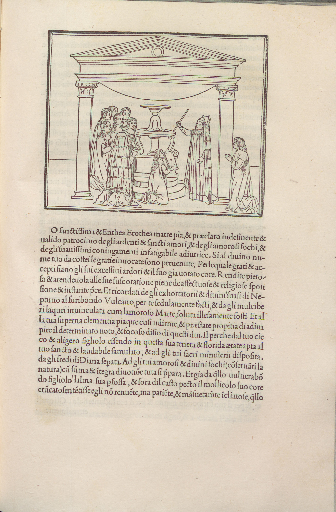
Annotated woodcut
p.220
o6v
f.110v
o
Gardens of Cythera
pp.221–255
35 pages, 24 woodcuts
▼
p.222
o7v
f.111v
o
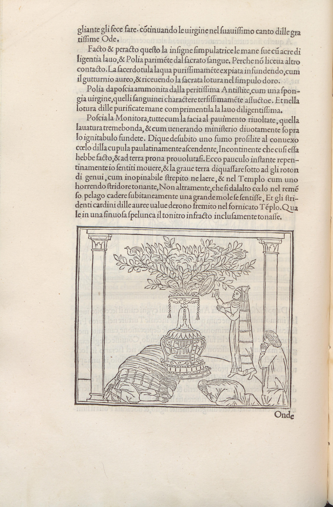
Annotated woodcut
p.223
o8r
f.112r
o
p.224
o8v
f.112v
o
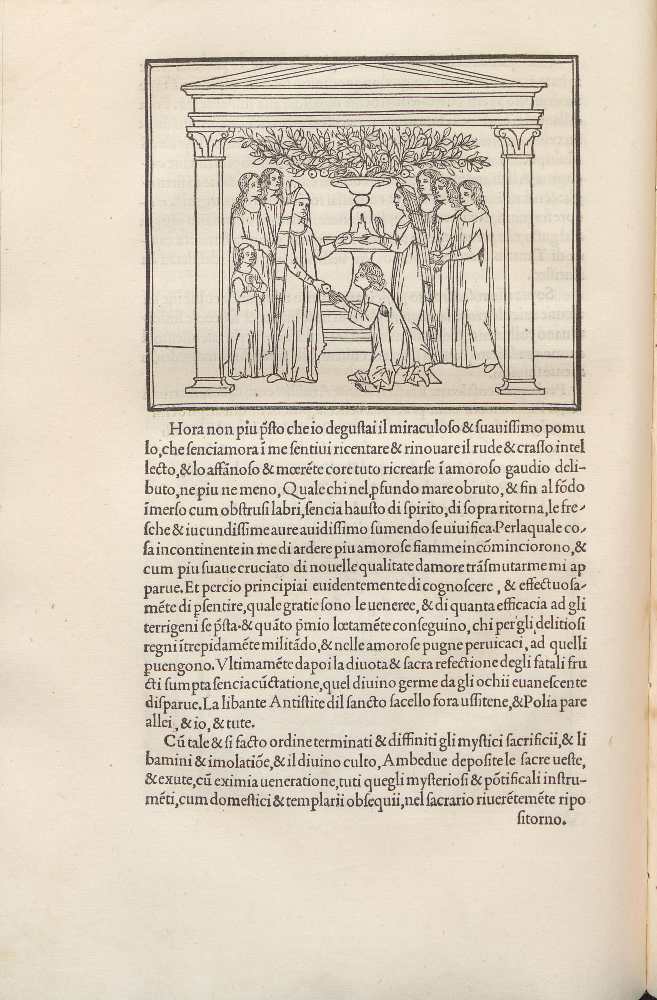
Annotated woodcut
p.226
p1v
f.113v
p
p.229
p3r
f.115r
p
p.230
p3v
f.115v
p
p.231
p4r
f.116r
p
p.232
p4v
f.116v
p

p.240
p8v
f.120v
p
p.242
q1v
f.121v
q
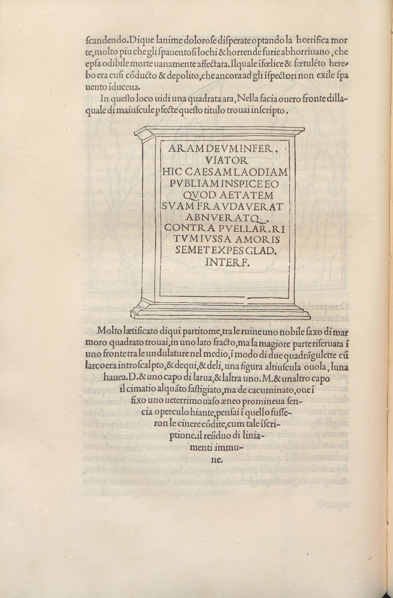
Annotated woodcut
p.246
q3v
f.123v
q
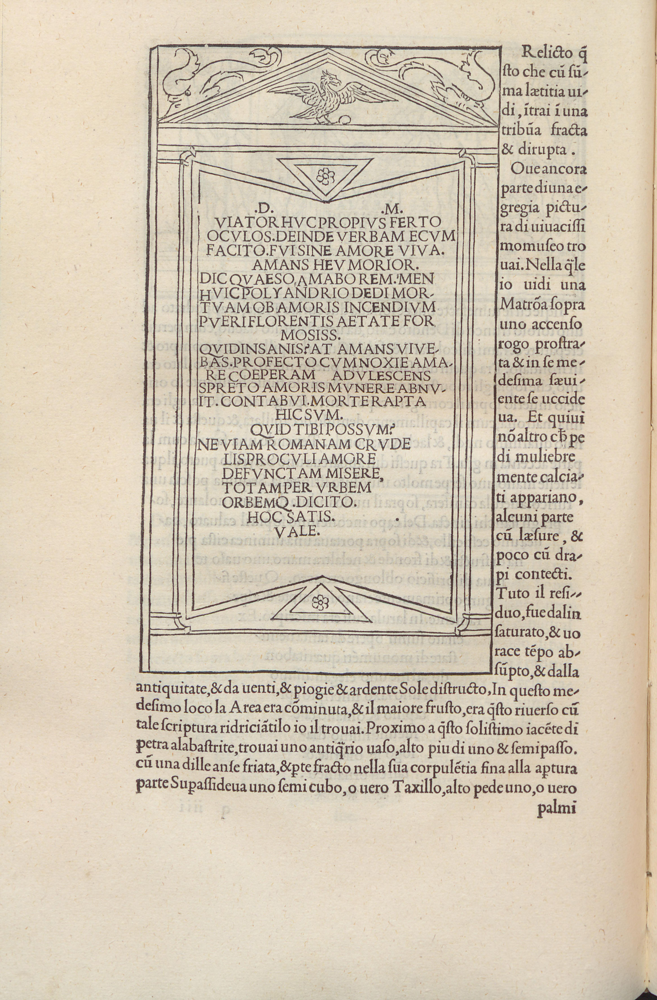
Annotated woodcut
p.248
q4v
f.124v
q
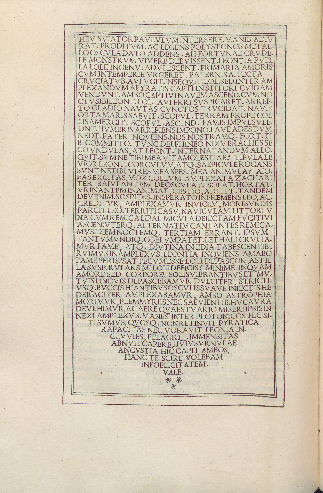
Annotated woodcut
p.249
q5r
f.125r
q
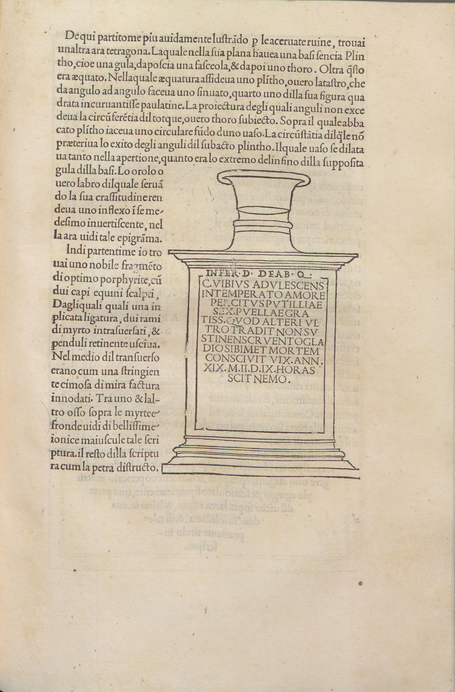
Annotated woodcut

p.253
q7r
f.127r
q
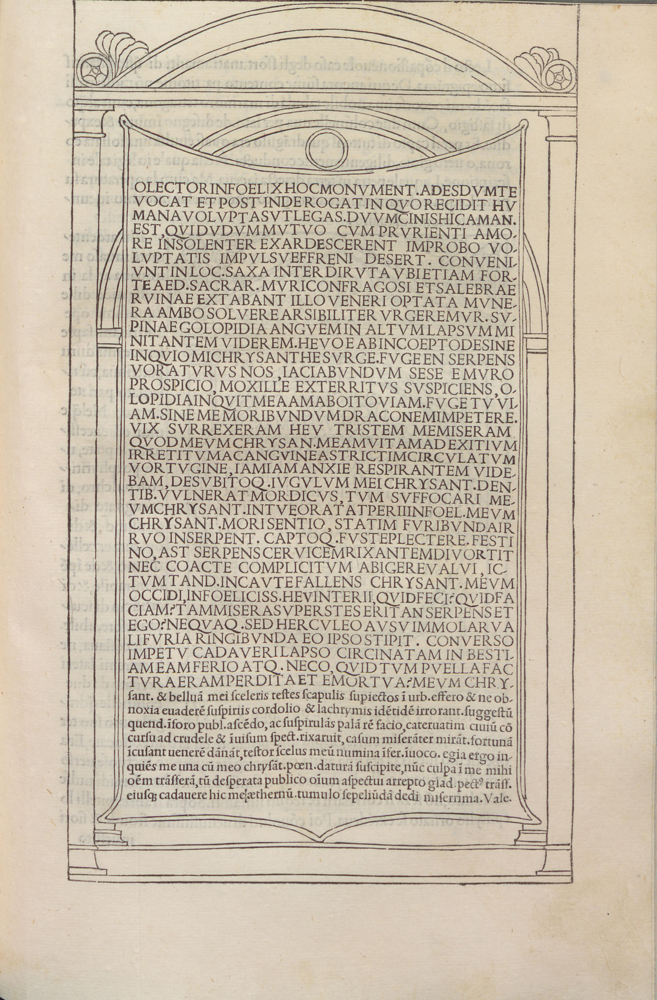
Annotated woodcut
p.255
q8r
f.128r
q
Fountain of Venus
pp.256–270
15 pages, 5 woodcuts
▼
p.256
q8v
f.128v
q
p.257
r1r
f.129r
r
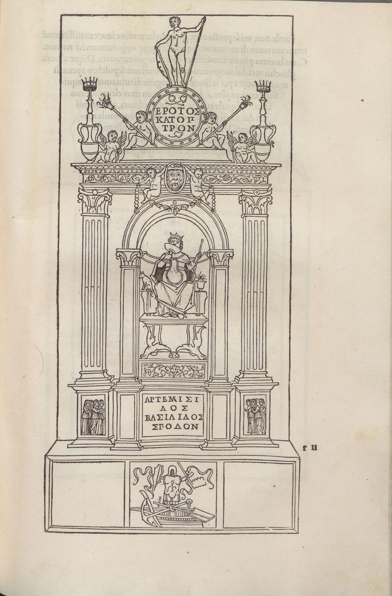
Annotated woodcut
p.259
r2r
f.130r
r
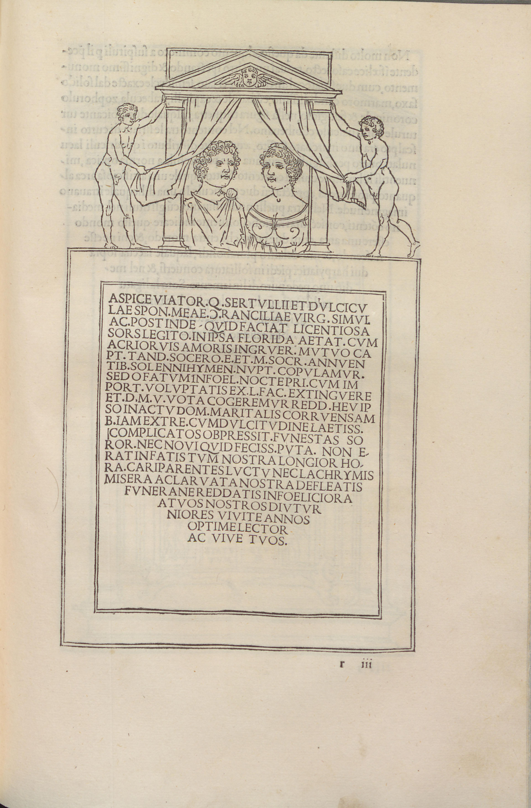
Annotated woodcut

p.261
r3r
f.131r
r
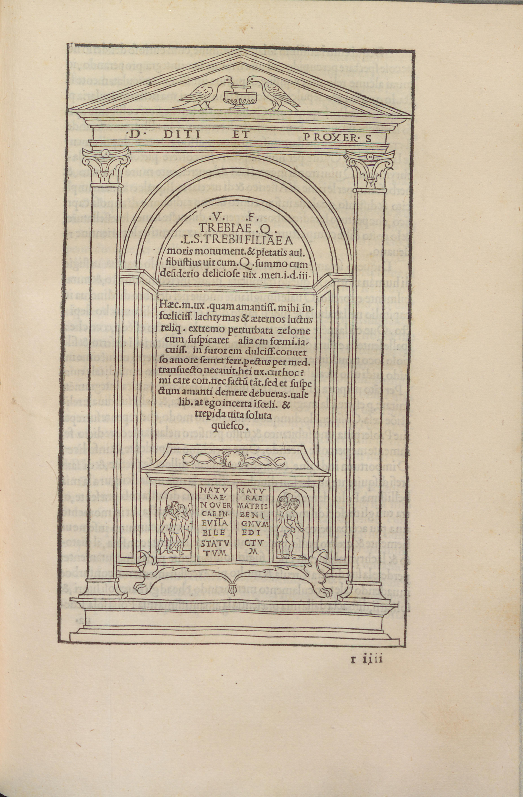
Annotated woodcut
p.262
r3v
f.131v
r
p.264
r4v
f.132v
r
p.265
r5r
f.133r
r
p.266
r5v
f.133v
r
p.268
r6v
f.134v
r
p.269
r7r
f.135r
r
p.270
r7v
f.135v
r
Book II: Polia
pp.271–448
178 pages, 51 woodcuts
▼
p.271
r8r
f.136r
r
p.272
r8v
f.136v
r
p.273
s1r
f.137r
s
p.274
s1v
f.137v
s
p.276
s2v
f.138v
s
p.277
s3r
f.139r
s
p.278
s3v
f.139v
s
p.280
s4v
f.140v
s
p.282
s5v
f.141v
s
p.285
s7r
f.143r
s
p.286
s7v
f.143v
s
p.287
s8r
f.144r
s
p.288
s8v
f.144v
s
p.289
t1r
f.145r
t
p.290
t1v
f.145v
t
p.291
t2r
f.146r
t
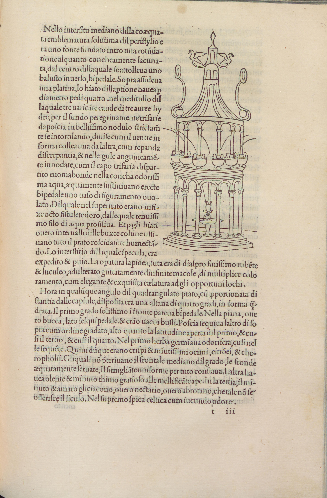
Annotated woodcut
p.292
t2v
f.146v
t
p.293
t3r
f.147r
t
p.294
t3v
f.147v
t
p.296
t4v
f.148v
t
Annotated woodcut
p.300
t6v
f.150v
t
p.303
t8r
f.152r
t
p.304
t8v
f.152v
t
p.305
x1r
f.153r
x
p.306
x1v
f.153v
x
p.307
x2r
f.154r
x
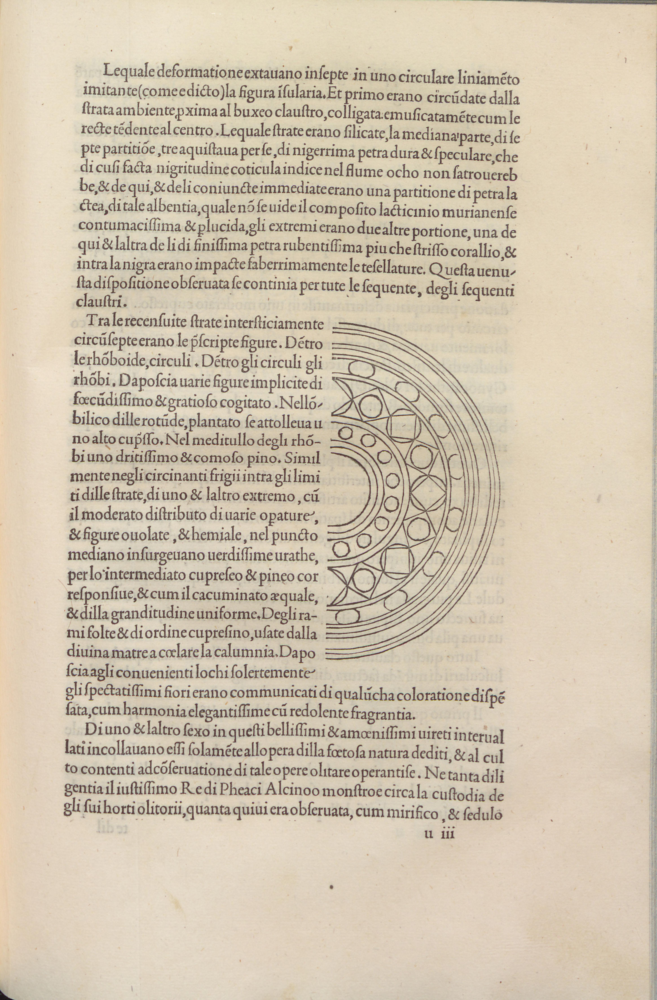
Annotated woodcut
p.308
x2v
f.154v
x
p.314
x5v
f.157v
x
Annotated woodcut
p.315
x6r
f.158r
x
p.316
x6v
f.158v
x
p.318
x7v
f.159v
x
Annotated woodcut
p.322
y1v
f.161v
y
p.323
y2r
f.162r
y
p.324
y2v
f.162v
y
p.325
y3r
f.163r
y
p.326
y3v
f.163v
y
p.329
y5r
f.165r
y
p.332
y6v
f.166v
y
p.335
y8r
f.168r
y
Annotated woodcut
p.336
y8v
f.168v
y
Annotated woodcut
p.338
z1v
f.169v
z
p.340
z2v
f.170v
z
p.342
z3v
f.171v
z
p.344
z4v
f.172v
z
p.354
A5v
f.177v
A
p.379
C2r
f.190r
C
p.381
C3r
f.191r
C
p.382
C3v
f.191v
C

p.390
C7v
f.195v
C
Annotated woodcut
p.395
D2r
f.198r
D
p.396
D2v
f.198v
D
p.398
D3v
f.199v
D
p.400
D4v
f.200v
D
p.407
D8r
f.204r
D
p.417
E5r
f.209r
E
p.418
E5v
f.209v
E
p.420
E6v
f.210v
E
p.423
E8r
f.212r
E
p.426
F1v
f.213v
F
p.427
F2r
f.214r
F
p.430
F3v
f.215v
F
p.431
F4r
f.216r
F
p.434
F5v
f.217v
F
p.437
F7r
f.219r
F
p.438
F7v
f.219v
F
p.439
F8r
f.220r
F
p.440
F8v
f.220v
F
p.441
G1r
f.221r
G
p.442
G1v
f.221v
G
p.444
G2v
f.222v
G
p.446
G3v
f.223v
G